Income Kidhome Teenhome Recency MntWines MntFruits MntMeatProducts
1 84835 0 0 0 189 104 379
2 57091 0 0 0 464 5 64
3 67267 0 1 0 134 11 59
4 32474 1 1 0 10 0 1
5 21474 1 0 0 6 16 24
6 71691 0 0 0 336 130 411
MntFishProducts MntSweetProducts MntGoldProds NumDealsPurchases
1 111 189 218 1
2 7 0 37 1
3 15 2 30 1
4 0 0 0 1
5 11 0 34 2
6 240 32 43 1
NumWebPurchases NumCatalogPurchases NumStorePurchases NumWebVisitsMonth
1 4 4 6 1
2 7 3 7 5
3 3 2 5 2
4 1 0 2 7
5 3 1 2 7
6 4 7 5 2
Response Edad Education_Basic Education_Graduation Education_Master
1 Yes 55 0 1 0
2 Yes 64 0 1 0
3 No 67 0 1 0
4 No 58 0 1 0
5 Yes 36 0 1 0
6 Yes 67 0 0 0
Education_PhD Marital_Status_Alone Marital_Status_Divorced
1 0 0 1
2 0 0 0
3 0 0 0
4 0 0 0
5 0 0 0
6 1 0 0
Marital_Status_Married Marital_Status_Single Marital_Status_Together
1 0 0 0
2 0 1 0
3 1 0 0
4 0 0 1
5 0 1 0
6 0 1 0
Marital_Status_Widow Marital_Status_YOLO mes_cliente_2 mes_cliente_3
1 0 0 0 0
2 0 0 0 0
3 0 0 0 0
4 0 0 0 0
5 0 0 0 0
6 0 0 0 1
mes_cliente_4 mes_cliente_5 mes_cliente_6 mes_cliente_7 mes_cliente_8
1 0 0 1 0 0
2 0 0 1 0 0
3 0 1 0 0 0
4 0 0 0 0 0
5 0 0 0 0 1
6 0 0 0 0 0
mes_cliente_9 mes_cliente_10 mes_cliente_11 mes_cliente_12 Complain_Yes
1 0 0 0 0 0
2 0 0 0 0 0
3 0 0 0 0 0
4 0 0 1 0 0
5 0 0 0 0 0
6 0 0 0 0 0Machine Learning I
KNN y Naives Bayes
1 Definición del problema
1.1 Contexto
Una tienda está planteando la venta final del año. Queremos lanzar una oferta. Será válido sólo para los clientes existentes y la campaña a través de las llamadas telefónicas que se está planificando actualmente para ellos. La dirección considera que la mejor manera de reducir el coste de la campaña es hacer un modelo predictivo que clasifique a los clientes que puedan comprar la oferta.
Las variables que contiene la base de datos son:
- Response (target): 1 si el cliente aceptó la oferta en la última campaña, 0 en caso contrario
- ID: ID único de cada cliente
- Year_Birth - Edad del cliente
- Complain - 1 si el cliente presentó una queja en los últimos 2 años
- Dt_Customer - Fecha de alta del cliente en la empresa
- Education - Nivel de estudios del cliente
- Marital - Estado civil del cliente
- Kidhome - Número de niños pequeños en el hogar del cliente
- Teenhome - Número de adolescentes en el hogar del cliente
- Income - Ingresos anuales del hogar del cliente
- MntFishProducts - Cantidad gastada en productos de pescado en los últimos 2 años
- MntMeatProducts - Cantidad gastada en productos cárnicos en los últimos 2 años
- MntFruits - Cantidad gastada en frutas en los últimos 2 años
- MntSweetProducts - cantidad gastada en productos dulces en los últimos 2 años
- MntWines - cantidad gastada en productos de vino en los últimos 2 años
- MntGoldProds - cantidad gastada en productos de oro en los últimos 2 años
- NumDealsPurchases - número de compras realizadas con descuento
- NumCatalogPurchases - número de compras realizadas por catálogo (comprando productos con envío por correo)
- NumStorePurchases - número de compras realizadas directamente en tiendas
- NumWebPurchases - número de compras realizadas a través del sitio web de la empresa
- NumWebVisitsMonth - número de visitas al sitio web de la empresa en el último mes
- Recency - número de días desde la última compra
1.2 Objetivo
Ls supertienda quiere predecir la probabilidad que el cliente de una respuesta positiva y identificar los diferentes factores que afectan la respuesta del cliente.
Podéis encontrar la base de datos en la siguiente web
2 KNN
2.1 KNN Classifier
2.1.1 Definimos los conjuntos de datos
Code
set.seed(1994)
ind_col <- c(16)
default_idx = sample(nrow(datos), nrow(datos)*0.7)
train <- datos[default_idx, ]; test <- datos[-default_idx, ]
X_train <- train[, -ind_col]; X_test <- test[, -ind_col]
y_train <- train[, ind_col]; y_test <- test[, ind_col]
# Convertimos todas las columnas en numéricas para que se pueda utilizar el algoritmo
# de KNN
X_train <- data.frame(lapply(X_train, as.numeric))
X_test <- data.frame(lapply(X_test, as.numeric))Code
library(caret)
set.seed(1994)
ind_col <- c(16)
default_idx <- createDataPartition(datos$Response, p = 0.7, list = FALSE)
X_trainC <- datos[default_idx, ]
X_testC <- datos[-default_idx, ]
y_testC <- X_testC[, ind_col]
X_testC <- X_testC[, -ind_col]Code
modelLookup("knn") model parameter label forReg forClass probModel
1 knn k #Neighbors TRUE TRUE TRUECode
from sklearn.model_selection import train_test_split
X = datos_py.drop(["Response"], axis=1)
y = datos_py['Response']
X_trainPy, X_testPy, y_trainPy, y_testPy = train_test_split(X, y, test_size = 0.3, random_state = 1994)2.1.2 Escalamos los datos
Code
library(scales)
# Suponemos que X_train y X_test son data.frames numéricos
cols <- colnames(X_train)
# Calcular medias y desviaciones estándar con X_train
means <- sapply(X_train, mean)
sds <- sapply(X_train, sd)
# Estandarizar X_train
X_train <- scale(X_train, center = means, scale = sds)
# Aplicar la misma transformación a X_test
X_test <- scale(X_test, center = means, scale = sds)
# Convertir de nuevo a data.frame
X_train <- as.data.frame(X_train)
X_test <- as.data.frame(X_test)
# Mantener nombres de columnas
colnames(X_train) <- cols
colnames(X_test) <- colsCode
library(caret)
# Crear preprocesador para centrado y escalado
preproc <- preProcess(X_trainC, method = c("center", "scale"))
# Aplicar transformación
X_trainC <- predict(preproc, X_trainC)
X_testC <- predict(preproc, X_testC)Code
cols = X_trainPy.columns
from sklearn.preprocessing import StandardScaler
import pandas as pd
scaler = StandardScaler()
X_trainPy = scaler.fit_transform(X_trainPy)
X_testPy = scaler.transform(X_testPy)
X_trainPy = pd.DataFrame(X_trainPy, columns=[cols])
X_testPy = pd.DataFrame(X_testPy, columns=[cols])2.1.3 Entrenamiento del modelo
Code
prediccion <- knn(train = X_train, test = X_test, cl = y_train, k = 3)
head(prediccion)[1] No Yes No No No Yes
Levels: No YesCode
(entrenamiento <- train(Response ~ ., data = X_trainC, method = "knn",
trControl = trainControl(method = "cv", number = 5),
# preProcess = c("center", "scale"),
tuneGrid = expand.grid(k = seq(1, 31, by = 2))))k-Nearest Neighbors
1553 samples
39 predictor
2 classes: 'No', 'Yes'
No pre-processing
Resampling: Cross-Validated (5 fold)
Summary of sample sizes: 1243, 1242, 1243, 1242, 1242
Resampling results across tuning parameters:
k Accuracy Kappa
1 0.8325879 0.279679994
3 0.8473976 0.213133436
5 0.8493185 0.131995536
7 0.8544695 0.126768918
9 0.8538347 0.110964792
11 0.8493206 0.054785486
13 0.8486796 0.032064246
15 0.8467483 0.023317027
17 0.8467524 0.006447460
19 0.8473955 0.007760759
21 0.8493289 0.011490079
23 0.8480386 0.003353250
25 0.8486817 0.004620608
27 0.8493248 0.005851422
29 0.8486796 0.004579949
31 0.8493227 0.005847308
Accuracy was used to select the optimal model using the largest value.
The final value used for the model was k = 7.Code
entrenamiento$modelType[1] "Classification"Code
# import KNeighbors ClaSSifier from sklearn
from sklearn.neighbors import KNeighborsClassifier
# instantiate the model
knn = KNeighborsClassifier(n_neighbors = 3)
# fit the model to the training set
knn.fit(X_trainPy, y_trainPy)KNeighborsClassifier(n_neighbors=3)In a Jupyter environment, please rerun this cell to show the HTML representation or trust the notebook.
On GitHub, the HTML representation is unable to render, please try loading this page with nbviewer.org.
Parameters
| n_neighbors | 3 | |
| weights | 'uniform' | |
| algorithm | 'auto' | |
| leaf_size | 30 | |
| p | 2 | |
| metric | 'minkowski' | |
| metric_params | None | |
| n_jobs | None |
2.1.4 Tunning parameters: Selección del valor de k
Code
set.seed(42)
k_to_try = 1:100
err_k = rep(x = 0, times = length(k_to_try))
for (i in seq_along(k_to_try)) {
pred <- knn(train = X_train,
test = X_test,
cl = y_train,
k = k_to_try[i],
prob = T)
err_k[i] <- calc_class_err(y_test, pred)
}Code
# plot error vs choice of k
plot(err_k, type = "b", col = "dodgerblue", cex = 1, pch = 20,
xlab = "k, number of neighbors", ylab = "classification error",
main = "(Test) Error Rate vs Neighbors")
# add line for min error seen
abline(h = min(err_k), col = "darkorange", lty = 3)
# add line for minority prevalence in test set
abline(h = mean(y_test == "Yes"), col = "grey", lty = 2)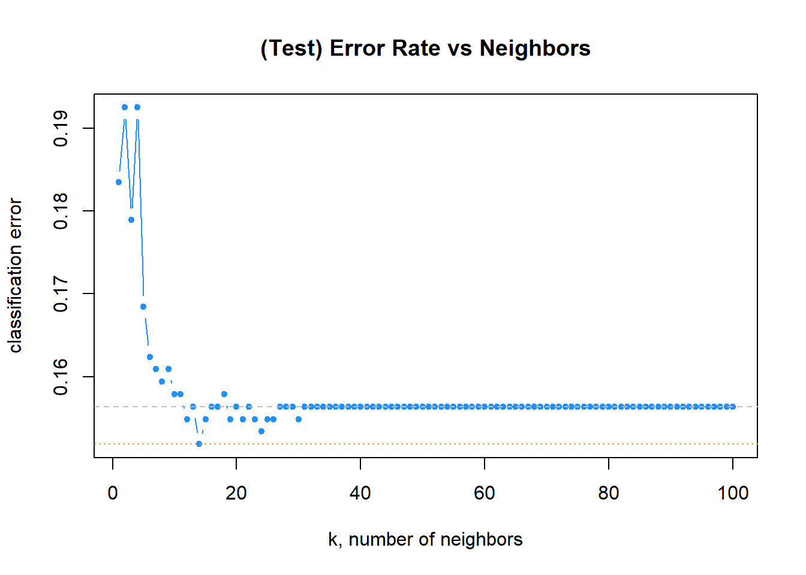
Code
get_best_result = function(caret_fit) {
best = which(rownames(caret_fit$results) == rownames(caret_fit$bestTune))
best_result = caret_fit$results[best, ]
rownames(best_result) = NULL
best_result
}Code
head(entrenamiento$results, 5) k Accuracy Kappa AccuracySD KappaSD
1 1 0.8325879 0.2796800 0.012589167 0.04474886
2 3 0.8473976 0.2131334 0.015312908 0.09135524
3 5 0.8493185 0.1319955 0.014549182 0.10608590
4 7 0.8544695 0.1267689 0.007133587 0.06311837
5 9 0.8538347 0.1109648 0.007330331 0.05904349Code
plot(entrenamiento)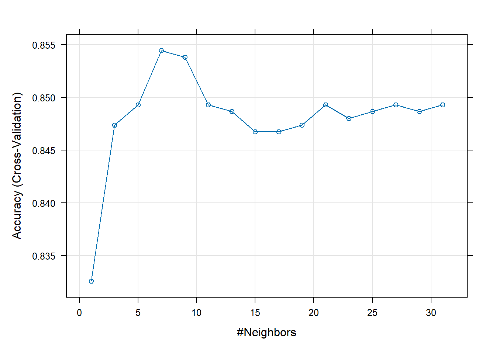
Code
tablaResultados <- entrenamiento$results
tablaResultados$error <- 1 - tablaResultados$Accuracy
# plot error vs choice of k
plot(tablaResultados$error, type = "b", col = "dodgerblue", cex = 1, pch = 20,
xlab = "k, number of neighbors", ylab = "classification error",
main = "(Test) Error Rate vs Neighbors")
# add line for min error seen
abline(h = min(err_k), col = "darkorange", lty = 3)
# add line for minority prevalence in test set
abline(h = mean(y_test == "Yes"), col = "grey", lty = 2)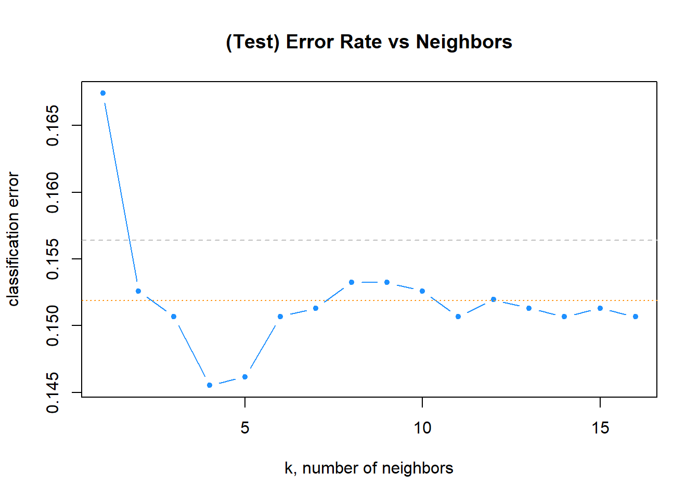
Code
get_best_result(entrenamiento) k Accuracy Kappa AccuracySD KappaSD
1 7 0.8544695 0.1267689 0.007133587 0.06311837Code
entrenamiento$finalModel7-nearest neighbor model
Training set outcome distribution:
No Yes
1319 234 Code
import matplotlib.pyplot as plt # for data visualization purposes
k_range = range(1, 20)
scores = []
for k in k_range:
knn = KNeighborsClassifier(n_neighbors = k)
knn.fit(X_trainPy, y_trainPy)
scores.append(knn.score(X_testPy, y_testPy))KNeighborsClassifier(n_neighbors=19)In a Jupyter environment, please rerun this cell to show the HTML representation or trust the notebook.
On GitHub, the HTML representation is unable to render, please try loading this page with nbviewer.org.
Parameters
| n_neighbors | 19 | |
| weights | 'uniform' | |
| algorithm | 'auto' | |
| leaf_size | 30 | |
| p | 2 | |
| metric | 'minkowski' | |
| metric_params | None | |
| n_jobs | None |
Code
plt.figure()
plt.xlabel('k')
plt.ylabel('accuracy')
plt.scatter(k_range, scores)
plt.xticks([0,5,10,15,20])([<matplotlib.axis.XTick object at 0x000001A35B5A7450>, <matplotlib.axis.XTick object at 0x000001A35B5682D0>, <matplotlib.axis.XTick object at 0x000001A35A0071D0>, <matplotlib.axis.XTick object at 0x000001A35B5BABD0>, <matplotlib.axis.XTick object at 0x000001A35A017190>], [Text(0, 0, '0'), Text(5, 0, '5'), Text(10, 0, '10'), Text(15, 0, '15'), Text(20, 0, '20')])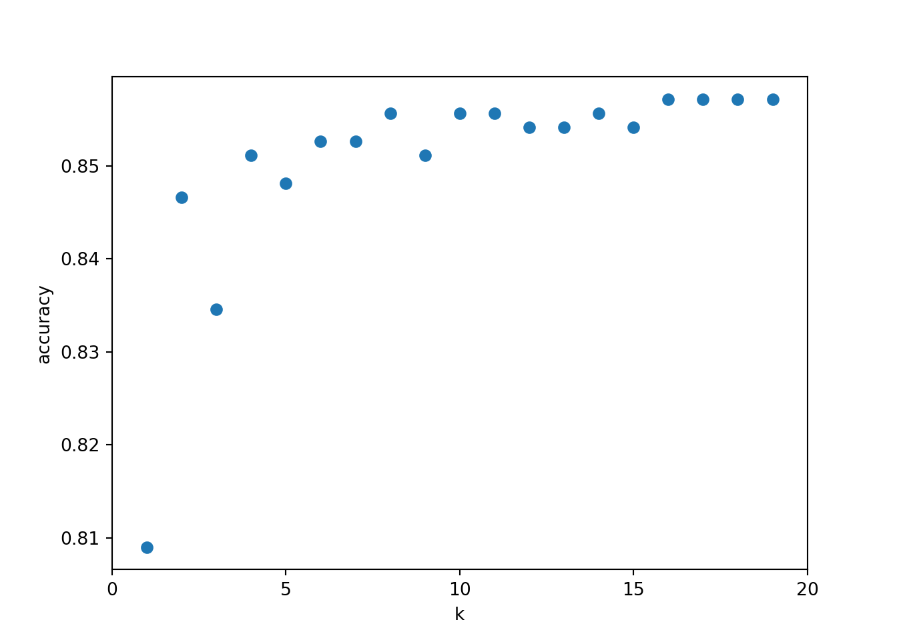
2.1.5 Predicción de la variable respuesta
La própia función que entrena el algoritmo ya devuelve las predicciones del algoritmo de KNN.
Code
head(predict(entrenamiento, newdata = X_testC, type = "prob"), n = 10) No Yes
1 0.8571429 0.1428571
2 0.8571429 0.1428571
3 1.0000000 0.0000000
4 0.7142857 0.2857143
5 0.8571429 0.1428571
6 0.8571429 0.1428571
7 1.0000000 0.0000000
8 1.0000000 0.0000000
9 0.7142857 0.2857143
10 0.8571429 0.14285712.1.5.1 Predicción de la etiqueta
Code
y_predPy = knn.predict(X_testPy)
y_predPy[:20]array(['No', 'No', 'No', 'No', 'No', 'No', 'No', 'No', 'No', 'No', 'No',
'No', 'No', 'No', 'No', 'No', 'No', 'No', 'No', 'No'], dtype=object)2.1.5.2 Predicción de pertenecer a cada etiqueta
Code
# probability of getting output as 2 - benign cancer
knn.predict_proba(X_testPy)array([[0.68421053, 0.31578947],
[0.84210526, 0.15789474],
[0.89473684, 0.10526316],
...,
[0.89473684, 0.10526316],
[1. , 0. ],
[1. , 0. ]], shape=(665, 2))2.1.6 Validación de la performance del modelo
Code
calc_class_err = function(actual, predicted) {
mean(actual != predicted)
}Code
calc_class_err(actual = y_test,
predicted = knn(train = X_train,
test = X_test,
cl = y_train,
k = 5))[1] 0.1684211Code
max(which(err_k == min(err_k)))[1] 14Code
predicciones <- knn(train = X_train, test = X_test, cl = y_train, k = 5)
table(predicciones, y_test) y_test
predicciones No Yes
No 539 90
Yes 22 14Code
# Paquetes
library(class) # knn
library(ggplot2) # plotting
library(dplyr) # %>%, mutate
library(tidyr)
# --- Datos de entrada esperados ---
# X_train, X_test: data.frames/ matrices numéricas
# y_train, y_test: vector/factor de etiquetas (clases)
k <- 5
# 1) PCA AJUSTADO EN TRAIN (con centrado y escalado). Proyectamos train y test.
pca <- prcomp(X_train, center = TRUE, scale. = TRUE)
Z_train <- predict(pca, newdata = X_train)[, 1:2]
Z_test <- predict(pca, newdata = X_test)[, 1:2]
colnames(Z_train) <- c("PC1","PC2")
colnames(Z_test) <- c("PC1","PC2")
# 2) Rango para el grid (usamos TRAIN para coherencia)
h <- 0.02
x_min <- min(Z_train[,1]) - 1; x_max <- max(Z_train[,1]) + 1
y_min <- min(Z_train[,2]) - 1; y_max <- max(Z_train[,2]) + 1
grid <- expand.grid(
PC1 = seq(x_min, x_max, by = h),
PC2 = seq(y_min, y_max, by = h)
)
# 3) kNN en el plano PCA (class::knn no "entrena"; predice dado train/test)
# Usamos las coordenadas PCA de train como "train", y el grid como "test".
# Asegura que y_train sea factor.
y_train <- factor(y_train)
y_test <- factor(y_test, levels = levels(y_train))
grid_pred <- knn(
train = Z_train,
test = grid,
cl = y_train,
k = k
)
grid$pred <- factor(grid_pred, levels = levels(y_train))
# 4) Data frames para puntos
df_train <- data.frame(Z_train, clase = y_train, split = "Train")
df_test <- data.frame(Z_test, clase = y_test, split = "Test")
# 5) Paleta (ajusta si hay >2 clases)
pal_cls <- c("#FF0000", "#00ffff") # puntos (clases)
pal_fill <- c("#FFAAAA", "#b3ffff") # fondo (clases)
names(pal_cls) <- levels(y_train)
names(pal_fill) <- levels(y_train)
# 6) Plot: fondo (grid) + puntos (train/test)
ggplot() +
geom_raster(data = grid, aes(x = PC1, y = PC2, fill = pred), alpha = 1) +
scale_fill_manual(values = pal_fill, name = "Clase (fondo)") +
geom_point(data = df_train, aes(PC1, PC2, color = clase), size = 1.8, stroke = .2) +
geom_point(data = df_test, aes(PC1, PC2, color = clase), size = 2.2, stroke = .2, shape = 21) +
scale_color_manual(values = pal_cls, name = "Clase (puntos)") +
labs(
title = sprintf("Frontera kNN en plano PCA (k=%d, weights='distance')", k),
x = "PC1", y = "PC2"
) +
coord_equal(expand = FALSE, xlim = c(x_min, x_max), ylim = c(y_min, y_max)) +
theme_minimal() +
theme(legend.position = "right")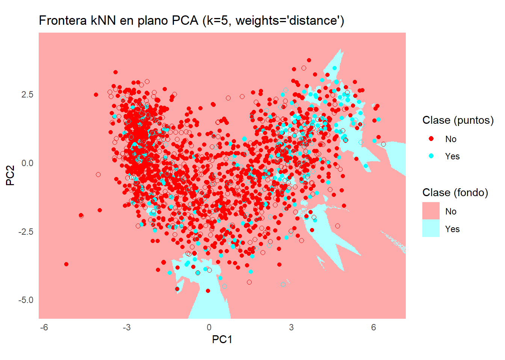
Code
caret::confusionMatrix(predict(entrenamiento, newdata = X_testC), y_testC)Confusion Matrix and Statistics
Reference
Prediction No Yes
No 555 89
Yes 9 10
Accuracy : 0.8522
95% CI : (0.8229, 0.8783)
No Information Rate : 0.8507
P-Value [Acc > NIR] : 0.4833
Kappa : 0.1275
Mcnemar's Test P-Value : 1.461e-15
Sensitivity : 0.9840
Specificity : 0.1010
Pos Pred Value : 0.8618
Neg Pred Value : 0.5263
Prevalence : 0.8507
Detection Rate : 0.8371
Detection Prevalence : 0.9713
Balanced Accuracy : 0.5425
'Positive' Class : No
Code
library(ggplot2)
library(reshape2)
# Crear matriz de confusión como tabla
conf_tbl <- table(Predicted = predict(entrenamiento, newdata = X_testC), Actual = y_testC)
# Convertir a data.frame para ggplot
conf_df <- as.data.frame(conf_tbl)
colnames(conf_df) <- c("Predicted", "Actual", "Freq")
# Visualización con ggplot2
ggplot(conf_df, aes(x = Actual, y = Predicted, fill = Freq)) +
geom_tile(color = "white") +
geom_text(aes(label = Freq), size = 5) +
scale_fill_gradient(low = "#f7fcf0", high = "#084081") +
labs(title = "Matriz de confusión", x = "Valor real", y = "Predicción") +
theme_minimal()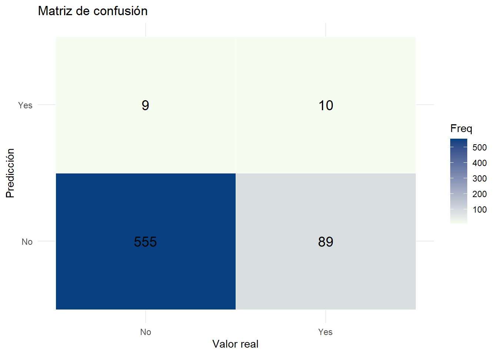
Code
library(caret)
library(ggplot2)
library(dplyr)
# --- Si X_trainC incluye la columna 'Response', separamos:
# (si ya la tienes separada, omite estas dos líneas y usa tus objetos)
y_trainC <- factor(X_trainC$Response)
X_train_num <- X_trainC[, setdiff(names(X_trainC), "Response"), drop = FALSE]
# Asegura que los predictores son numéricos
X_train_num[] <- lapply(X_train_num, function(col) as.numeric(as.character(col)))
# 1) Preprocesado SOLO sobre predictores (center, scale, pca=2)
preproc <- preProcess(X_train_num, method = c("center", "scale", "pca"), pcaComp = 2)
Z_train <- predict(preproc, X_train_num) # tendrá columnas PC1 y PC2
# --- Prepara también el test de forma consistente ---
# Si X_testC tiene 'Response', sepárala:
if ("Response" %in% names(X_testC)) {
y_testC <- factor(X_testC$Response, levels = levels(y_trainC))
X_test_num <- X_testC[, setdiff(names(X_testC), "Response"), drop = FALSE]
} else {
# si ya tienes y_testC aparte:
X_test_num <- X_testC
y_testC <- factor(y_testC, levels = levels(y_trainC))
}
X_test_num[] <- lapply(X_test_num, function(col) as.numeric(as.character(col)))
Z_test <- predict(preproc, X_test_num)
# 2) Control de entrenamiento (CV estratificada)
ctrl <- trainControl(method = "cv", number = 5)
# 3) Entrenar kNN en el espacio PCA
k <- 5
modelo_knn <- train(
x = Z_train,
y = y_trainC,
method = "knn",
tuneGrid = data.frame(k = k),
trControl = ctrl,
metric = "Accuracy"
)
# 3) Grid en el plano PCA (rango del TRAIN)
h <- 0.02
x_min <- min(Z_train$PC1) - 1; x_max <- max(Z_train$PC1) + 1
y_min <- min(Z_train$PC2) - 1; y_max <- max(Z_train$PC2) + 1
grid <- expand.grid(
PC1 = seq(x_min, x_max, by = h),
PC2 = seq(y_min, y_max, by = h)
)
# 4) Predicción del fondo en el grid
grid$pred <- predict(modelo_knn, newdata = grid)
# 5) Data frames para puntos
df_train <- data.frame(Z_train, clase = y_trainC, split = "Train")
df_test <- data.frame(Z_test, clase = y_testC, split = "Test")
# 6) Paletas
pal_cls <- c("#FF0000", "#00ffff")
pal_fill <- c("#FFAAAA", "#b3ffff")
names(pal_cls) <- levels(y_trainC)
names(pal_fill) <- levels(y_trainC)
# 7) Plot
ggplot() +
geom_raster(data = grid, aes(x = PC1, y = PC2, fill = pred), alpha = 1) +
scale_fill_manual(values = pal_fill, name = "Clase (fondo)") +
geom_point(data = df_train, aes(PC1, PC2, color = clase), size = 1.8, stroke = .2) +
geom_point(data = df_test, aes(PC1, PC2, color = clase), size = 2.2, stroke = .2, shape = 21) +
scale_color_manual(values = pal_cls, name = "Clase (puntos)") +
labs(
title = sprintf("Frontera kNN en plano PCA (k=%d)", k),
x = "PC1", y = "PC2"
) +
coord_equal(expand = FALSE, xlim = c(x_min, x_max), ylim = c(y_min, y_max)) +
theme_minimal() +
theme(legend.position = "right")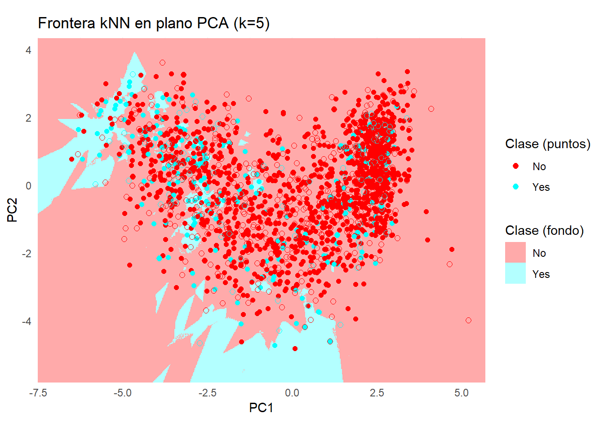
Code
from sklearn.metrics import accuracy_score
print('Model accuracy score: {0:0.4f}'. format(accuracy_score(y_testPy, y_predPy)))Model accuracy score: 0.85712.1.7 Estudio del sobreajuste
Code
print('Training set score: {:.4f}'.format(knn.score(X_trainPy, y_trainPy)))Training set score: 0.8478Code
print('Test set score: {:.4f}'.format(knn.score(X_testPy, y_testPy)))Test set score: 0.8571Code
import seaborn as sns # for data visualization
from sklearn.metrics import confusion_matrix
# visualize confusion matrix with seaborn heatmap
plt.figure(figsize=(6,4))
confMatrix = confusion_matrix(y_testPy, y_predPy)
cm_matrix = pd.DataFrame(data=confMatrix, columns=['Actual Positive:1', 'Actual Negative:0'], index=['Predict Positive:1', 'Predict Negative:0'])
sns.heatmap(cm_matrix, annot=True, fmt='d', cmap='YlGnBu')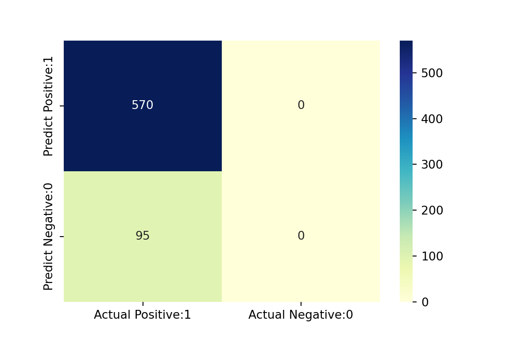
Code
from sklearn.metrics import classification_report
print(classification_report(y_testPy, y_predPy)) precision recall f1-score support
No 0.86 1.00 0.92 570
Yes 0.00 0.00 0.00 95
accuracy 0.86 665
macro avg 0.43 0.50 0.46 665
weighted avg 0.73 0.86 0.79 665Code
import numpy as np
import matplotlib.pyplot as plt
from matplotlib.colors import ListedColormap
import matplotlib.patches as mpatches
from sklearn.preprocessing import StandardScaler, LabelEncoder
from sklearn.decomposition import PCA
from sklearn.neighbors import KNeighborsClassifier
# ==== Parámetros ====
n_neighbors = 5
weights = 'distance'
h = 0.02
# ==== 0) Asegurar tipos correctos ====
X_trainPy = np.asarray(X_trainPy, dtype=float)
X_testPy = np.asarray(X_testPy, dtype=float)
y_trainPy = np.asarray(y_trainPy)
y_testPy = np.asarray(y_testPy)
# Codificar etiquetas a enteros (necesario para c= y pcolormesh)
le = LabelEncoder()
y_train_num = le.fit_transform(y_trainPy)
y_test_num = le.transform(y_testPy)
# ==== 1) Estandarizar con medias/SD de train + PCA en train ====
scaler = StandardScaler()
X_train_scaled = scaler.fit_transform(X_trainPy)
X_test_scaled = scaler.transform(X_testPy)
pca = PCA(n_components=2, random_state=0)
Z_train = pca.fit_transform(X_train_scaled).astype(float) # coords PCA train
Z_test = pca.transform(X_test_scaled).astype(float) # coords PCA test
# ==== 2) Entrenar KNN en el espacio PCA (train) ====
clf = KNeighborsClassifier(n_neighbors=n_neighbors, weights=weights)
clf.fit(Z_train, y_train_num)KNeighborsClassifier(weights='distance')In a Jupyter environment, please rerun this cell to show the HTML representation or trust the notebook.
On GitHub, the HTML representation is unable to render, please try loading this page with nbviewer.org.
Parameters
| n_neighbors | 5 | |
| weights | 'distance' | |
| algorithm | 'auto' | |
| leaf_size | 30 | |
| p | 2 | |
| metric | 'minkowski' | |
| metric_params | None | |
| n_jobs | None |
Code
# ==== 3) Mallado en el plano PCA (usando rango de TRAIN para coherencia) ====
x_min, x_max = Z_train[:, 0].min() - 1, Z_train[:, 0].max() + 1
y_min, y_max = Z_train[:, 1].min() - 1, Z_train[:, 1].max() + 1
xx, yy = np.meshgrid(np.arange(x_min, x_max, h),
np.arange(y_min, y_max, h))
Z_grid_pred_num = clf.predict(np.c_[xx.ravel(), yy.ravel()]).reshape(xx.shape)
# ==== 4) Paletas (binario por tus colores; amplía si hay >2 clases) ====
cmap_light = ListedColormap(['#FFAAAA', '#b3ffff'])
cmap_bold = ListedColormap(['#FF0000', '#00ffff'])
# ==== 5) Plot fondo + puntos ====
plt.figure(figsize=(7, 5))
plt.pcolormesh(xx, yy, Z_grid_pred_num, cmap=cmap_light, shading='auto')
# Train
plt.scatter(Z_train[:, 0], Z_train[:, 1], c=y_train_num, cmap=cmap_bold,
edgecolor='k', s=25, alpha=0.8, label='Train')
# Test
plt.scatter(Z_test[:, 0], Z_test[:, 1], c=y_test_num, cmap=cmap_bold,
edgecolor='k', s=35, marker='o', label='Test')
plt.xlim(xx.min(), xx.max())(-6.339168687276463, 7.340831312723245)Code
plt.ylim(yy.min(), yy.max())(-4.743849161138547, 5.6961508388612305)Code
plt.xlabel('PC1')
plt.ylabel('PC2')
plt.title(f"Frontera KNN en plano PCA (k={n_neighbors}, weights='{weights}')")
# Leyenda de clases con nombres originales
classes = list(le.classes_)
palette = ['#FF0000', '#00ffff'] # ajusta si hay más clases
patches = [mpatches.Patch(color=palette[i % len(palette)], label=str(lbl))
for i, lbl in enumerate(classes)]
legend_classes = plt.legend(handles=patches, title="Clases",
loc='upper right', bbox_to_anchor=(1.32, 1.0))
plt.gca().add_artist(legend_classes)
plt.legend(loc='best') # leyenda Train/Test
plt.tight_layout()
plt.show()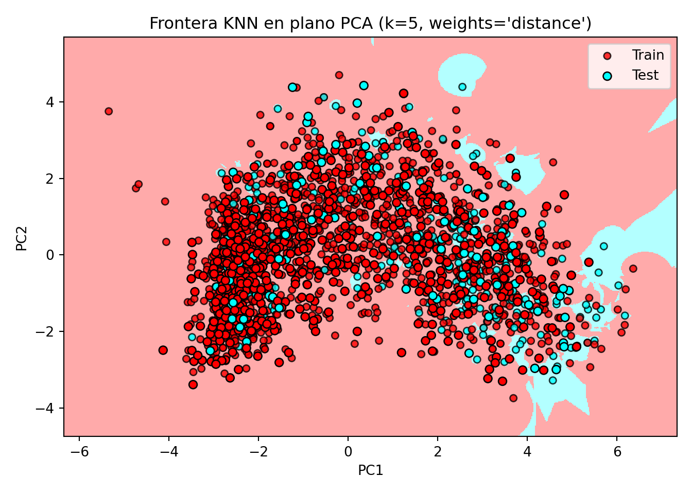
2.2 KNN Regresor
2.2.1 Definimos los conjuntos de datos
Code
library(FNN)Code
set.seed(1994)
default_idx = sample(nrow(datos), nrow(datos)*0.7)
datos <- datos[, -c(1)]
train <- datos[default_idx, ]; test <- datos[-default_idx, ]
X_train <- train[, -6]; X_test <- test[, -6]
y_train <- train[, 6]; y_test <- test[, 6]
# Convertimos todas las columnas en numéricas para que se pueda utilizar el algoritmo
# de KNN
X_train <- data.frame(lapply(X_train, as.numeric))
X_test <- data.frame(lapply(X_test, as.numeric))Code
library(caret)
set.seed(1994)
default_idx <- createDataPartition(datos$Recency, p = 0.7, list = FALSE)
X_trainC <- datos[default_idx, ]
X_testC <- datos[-default_idx, ]
y_testC <- X_testC[, 6]Code
from sklearn.model_selection import train_test_split
X = datos_py.drop(["Recency"], axis=1)
y = datos_py['Recency']
X_trainPy, X_testPy, y_trainPy, y_testPy = train_test_split(X, y, test_size = 0.3, random_state = 1994)
from sklearn.compose import ColumnTransformer
from sklearn.preprocessing import OneHotEncoder, StandardScaler
from sklearn.pipeline import Pipeline
# y para regresión debe ser numérico:
y_train = np.asarray(y_trainPy, dtype=float)
y_test = np.asarray(y_testPy, dtype=float)
# Detecta tipos
num_cols = X_trainPy.select_dtypes(include=[np.number]).columns.tolist()
cat_cols = X_trainPy.select_dtypes(exclude=[np.number]).columns.tolist()
# Preprocesador: escala numéricas y one-hot en categóricas
preprocess = ColumnTransformer(
transformers=[
("num", StandardScaler(), num_cols),
("cat", OneHotEncoder(handle_unknown="ignore", sparse_output=False), cat_cols),
],
remainder="drop"
)
# Transforma los datos usando el preprocesador ya ajustado
X_trainPy = preprocess.fit_transform(X_trainPy)
X_testPy = preprocess.transform(X_testPy)2.2.2 Entrenamiento del modelo
Code
pred <- knn.reg(train = X_train, test = X_test, y = y_train, k = 1)
head(pred)$call
knn.reg(train = X_train, test = X_test, y = y_train, k = 1)
$k
[1] 1
$n
[1] 665
$pred
[1] 171 14 102 32 469 14 38 67 64 171 2 43 746 217 17 69 818 333
[19] 1 222 223 11 22 711 42 483 38 3 31 300 44 81 21 50 45 319
[37] 352 31 42 62 24 24 115 300 6 117 8 223 16 5 186 90 13 168
[55] 35 6 56 5 40 4 345 300 61 194 38 717 226 58 58 5 24 30
[73] 168 27 145 689 107 67 16 50 44 70 100 21 46 92 431 178 570 161
[91] 292 5 10 99 26 348 71 50 597 26 252 18 7 13 13 132 21 694
[109] 30 24 17 24 8 8 141 14 8 14 175 115 161 13 3 69 320 185
[127] 215 13 16 13 63 128 189 24 860 39 417 97 2 689 13 4 26 194
[145] 199 364 4 860 215 195 119 507 73 27 142 5 28 11 711 75 172 92
[163] 10 12 267 929 12 6 3 101 65 22 161 129 129 3 30 2 561 129
[181] 29 47 108 92 11 2 384 83 11 249 46 44 24 217 294 18 212 8
[199] 8 128 2 178 501 127 132 119 413 559 11 704 843 50 46 137 22 137
[217] 3 35 10 4 7 69 929 11 19 10 92 7 31 568 47 243 424 689
[235] 8 14 130 212 31 15 420 395 40 49 706 50 107 142 108 333 50 7
[253] 8 22 18 132 50 535 8 6 226 8 14 5 275 83 119 119 5 845
[271] 23 57 17 6 27 21 59 154 4 5 40 746 746 39 43 5 204 295
[289] 13 264 132 83 107 160 4 5 17 81 205 16 6 305 305 845 107 18
[307] 92 65 238 18 253 169 18 194 292 50 15 64 2 100 100 85 746 98
[325] 11 32 46 29 81 317 259 8 3 10 46 84 18 237 10 13 29 75
[343] 29 639 17 27 60 89 18 10 189 123 11 51 864 4 7 29 7 16
[361] 3 29 594 17 29 445 3 27 17 206 913 97 377 22 9 21 84 11
[379] 16 149 10 10 4 51 238 238 345 171 30 76 16 215 5 13 493 403
[397] 128 107 21 444 756 104 104 345 345 57 27 49 298 352 12 131 216 7
[415] 20 154 28 217 160 10 13 14 31 44 403 403 128 137 64 294 14 925
[433] 74 790 19 7 5 590 590 33 142 217 5 101 93 100 180 8 46 93
[451] 15 1 6 247 64 3 140 93 8 10 21 257 697 19 72 15 14 109
[469] 93 124 6 108 462 568 83 10 29 160 6 465 74 14 14 66 71 7
[487] 756 20 567 85 183 12 76 112 690 168 179 140 56 5 26 309 128 11
[505] 137 13 15 11 54 54 16 151 24 387 133 9 16 27 30 324 287 7
[523] 12 170 15 12 24 430 30 24 114 447 129 25 25 28 239 92 7 18
[541] 5 612 154 10 22 168 73 368 15 11 5 253 76 287 112 217 133 19
[559] 3 60 329 7 25 815 73 487 14 135 15 9 19 2 264 63 63 936
[577] 16 79 359 88 415 65 792 387 449 11 12 278 221 10 534 428 18 19
[595] 63 2 11 213 17 387 24 48 159 7 7 3 60 19 430 23 19 113
[613] 9 46 54 41 21 500 103 74 597 23 420 39 25 4 14 43 106 33
[631] 55 103 20 363 217 21 19 110 3 15 103 10 5 414 14 14 255 99
[649] 22 159 19 3 838 818 15 11 128 838 6 24 142 3 21 159 500
$residuals
NULL
$PRESS
NULLCode
caret::modelLookup("knn") model parameter label forReg forClass probModel
1 knn k #Neighbors TRUE TRUE TRUECode
knn <- train(Recency ~ ., data = X_trainC, method = "knn",
preProc = c("center", "scale"), tuneGrid = data.frame(k = 1:10),
trControl = trainControl(method = "cv", number = 10))
ggplot(knn, highlight = TRUE) # Alternativamente: plot(knn)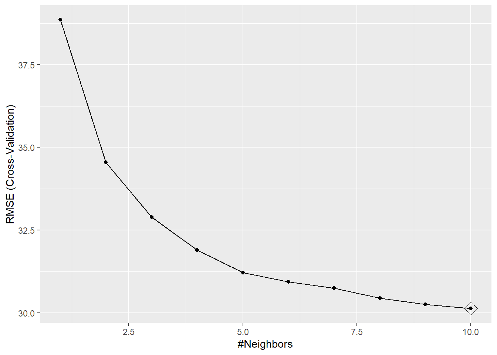
Code
from sklearn.neighbors import KNeighborsRegressor
from sklearn.metrics import mean_squared_error, r2_score
# Create and train the KNN regressor
knn_regressor = KNeighborsRegressor(n_neighbors = 5)
knn_regressor.fit(X_trainPy, y_trainPy)KNeighborsRegressor()In a Jupyter environment, please rerun this cell to show the HTML representation or trust the notebook.
On GitHub, the HTML representation is unable to render, please try loading this page with nbviewer.org.
Parameters
| n_neighbors | 5 | |
| weights | 'uniform' | |
| algorithm | 'auto' | |
| leaf_size | 30 | |
| p | 2 | |
| metric | 'minkowski' | |
| metric_params | None | |
| n_jobs | None |
2.2.3 Tunning parameters: Selección del valor de k
Code
rmse = function(actual, predicted) {
sqrt(mean((actual - predicted) ^ 2))
}
# define helper function for getting knn.reg predictions
# note: this function is highly specific to this situation and dataset
make_knn_pred <- function(k = 1, training, predicting, valueTarget) {
pred = FNN::knn.reg(train = training,
test = predicting,
y = valueTarget, k = k)$pred
act = predicting$Recency
rmse(predicted = pred, actual = act)
}Code
# define values of k to evaluate
k = c(1, 5, 10, 25, 50, 250)
# get requested train RMSEs
knn_trn_rmse <- sapply(k, make_knn_pred, training = X_train,
predicting = X_train,
valueTarget = y_train)
# determine "best" k
best_k <- k[which.min(knn_trn_rmse)]Code
regSummary <- function(data, lev = NULL, model = NULL) {
out <- c(
RMSE = RMSE(data$pred, data$obs),
Rsquared = R2(data$pred, data$obs),
MAE = MAE(data$pred, data$obs)
)
out
}
# Definimos un método de remuestreo
cv <- trainControl(
method = "repeatedcv",
number = 10,
repeats = 5,
classProbs = TRUE,
preProcOptions = list("center"),
summaryFunction = regSummary,
savePredictions = "final")
# Definimos la red de posibles valores del hiperparámetro
hyper_grid <- expand.grid(k = c(1:10,15,20,30,50,75,100))Code
set.seed(1994)
# Se entrena el modelo ajustando el hiperparámetro óptimo
model <- train(
Recency ~ .,
data = X_trainC,
method = "knn",
trControl = cv,
tuneGrid = hyper_grid,
metric = "MAPE")Code
import matplotlib.pyplot as plt # for data visualization purposes
def mean_absolute_percentage_error(y_true, y_pred):
y_true, y_pred = np.array(y_true), np.array(y_pred)
# Evitar divisiones por cero
mask = y_true != 0
return np.mean(np.abs((y_true[mask] - y_pred[mask]) / y_true[mask])) * 100
k_range = range(1, 20)
scores = []
for k in k_range:
knn = KNeighborsRegressor(n_neighbors=k)
knn.fit(X_trainPy, y_trainPy)
y_pred = knn.predict(X_testPy)
mape = mean_absolute_percentage_error(y_testPy, y_pred)
scores.append(mape)KNeighborsRegressor(n_neighbors=19)In a Jupyter environment, please rerun this cell to show the HTML representation or trust the notebook.
On GitHub, the HTML representation is unable to render, please try loading this page with nbviewer.org.
Parameters
| n_neighbors | 19 | |
| weights | 'uniform' | |
| algorithm | 'auto' | |
| leaf_size | 30 | |
| p | 2 | |
| metric | 'minkowski' | |
| metric_params | None | |
| n_jobs | None |
Code
plt.figure(figsize=(6,4))
plt.plot(k_range, scores, marker='o')
plt.xlabel('k')
plt.ylabel('MAPE (%)')
plt.title('Error porcentual medio absoluto vs número de vecinos (k)')
plt.xticks([0,5,10,15,20])([<matplotlib.axis.XTick object at 0x000001A38A98E110>, <matplotlib.axis.XTick object at 0x000001A35A031450>, <matplotlib.axis.XTick object at 0x000001A38A8E88D0>, <matplotlib.axis.XTick object at 0x000001A38A8AFE50>, <matplotlib.axis.XTick object at 0x000001A38A896910>], [Text(0, 0, '0'), Text(5, 0, '5'), Text(10, 0, '10'), Text(15, 0, '15'), Text(20, 0, '20')])Code
plt.show()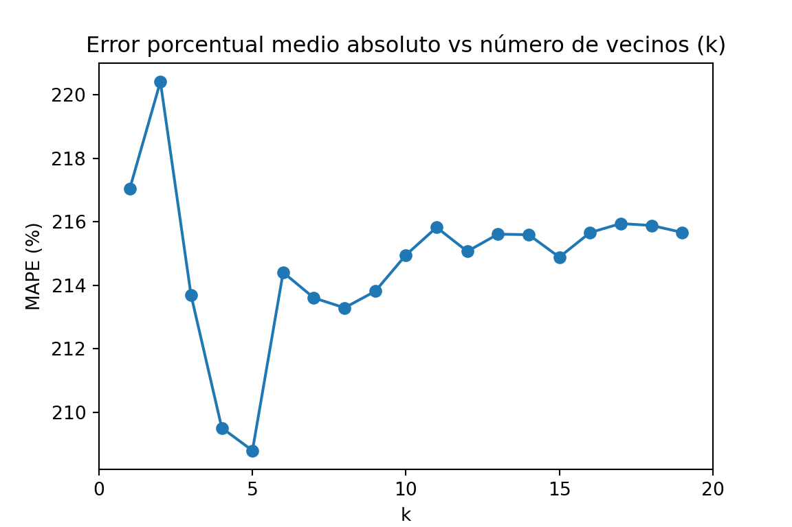
2.2.4 Predicción de la variable respuesta
La própia función que entrena el algoritmo ya devuelve las predicciones del algoritmo de KNN.
Code
head(predict(model, newdata = X_testC), n = 10) [1] 53.42667 45.97333 45.33333 45.33333 49.16000 50.50667 42.37333 51.86667
[9] 41.64474 45.14667Code
y_predPy = knn_regressor.predict(X_testPy)
y_predPy[:10]array([59.8, 56.4, 52. , 30.6, 24.6, 64.2, 48.8, 19.8, 56.6, 44. ])3 Naives Bayes (Classifier)
3.1 Definición de los conjuntos de datos
Code
set.seed(1994)
ind_col <- c(16)
default_idx = sample(nrow(datos), nrow(datos)*0.7)
train <- datos[default_idx, ]; test <- datos[-default_idx, ]
X_train <- train;
# X_train <- train[, -ind_col];
X_test <- test[, -ind_col]
y_train <- train[, ind_col]; y_test <- test[, ind_col]
# Convertimos todas las columnas en numéricas para que se pueda utilizar el algoritmo
# de KNN
# X_train <- data.frame(lapply(X_train, as.numeric))
# X_test <- data.frame(lapply(X_test, as.numeric))Code
library("caret")
library("naivebayes")
library("reshape")
library("ggplot2")
set.seed(1994)
ind_col <- c(16)
default_idx <- createDataPartition(datos$Response, p = 0.7, list = FALSE)
X_trainC <- datos[default_idx, ]
X_testC <- datos[-default_idx, ]
y_testC <- X_testC[, ind_col]
X_testC <- X_testC[, -ind_col]Code
modelLookup("naive_bayes") model parameter label forReg forClass probModel
1 naive_bayes laplace Laplace Correction FALSE TRUE TRUE
2 naive_bayes usekernel Distribution Type FALSE TRUE TRUE
3 naive_bayes adjust Bandwidth Adjustment FALSE TRUE TRUECode
from sklearn.model_selection import train_test_split
X = datos_py.drop(["Response"], axis=1)
y = datos_py['Response']
X_trainPy, X_testPy, y_trainPy, y_testPy = train_test_split(X, y, test_size = 0.3, random_state = 1994)3.2 Entrenamiento del modelo
Code
library(e1071)
(nb_base <- naiveBayes(Response ~ ., data = X_train))
Naive Bayes Classifier for Discrete Predictors
Call:
naiveBayes.default(x = X, y = Y, laplace = laplace)
A-priori probabilities:
Y
No Yes
0.8523533 0.1476467
Conditional probabilities:
Kidhome
Y [,1] [,2]
No 0.4349470 0.5383867
Yes 0.3799127 0.5041390
Teenhome
Y [,1] [,2]
No 0.5378215 0.5437755
Yes 0.2969432 0.4857977
Recency
Y [,1] [,2]
No 51.97731 28.59796
Yes 34.79476 27.41649
MntWines
Y [,1] [,2]
No 274.1944 303.7532
Yes 491.6987 425.0553
MntFruits
Y [,1] [,2]
No 25.40847 39.46007
Yes 38.14410 46.63587
MntMeatProducts
Y [,1] [,2]
No 150.5719 210.0253
Yes 289.3406 288.9687
MntFishProducts
Y [,1] [,2]
No 35.83888 53.15100
Yes 53.18341 64.71829
MntSweetProducts
Y [,1] [,2]
No 26.44781 40.62991
Yes 41.91266 50.01554
MntGoldProds
Y [,1] [,2]
No 41.22617 49.78208
Yes 58.64192 56.85865
NumDealsPurchases
Y [,1] [,2]
No 2.274584 1.841840
Yes 2.305677 2.078084
NumWebPurchases
Y [,1] [,2]
No 3.925870 2.684626
Yes 4.982533 2.630731
NumCatalogPurchases
Y [,1] [,2]
No 2.472769 2.870076
Yes 4.283843 3.201254
NumStorePurchases
Y [,1] [,2]
No 5.806354 3.278682
Yes 6.213974 3.247479
NumWebVisitsMonth
Y [,1] [,2]
No 5.245083 2.443703
Yes 5.275109 2.655405
Edad
Y [,1] [,2]
No 56.27837 12.05355
Yes 54.92576 12.28602
Education_Basic
Y [,1] [,2]
No 0.027231467 0.16281882
Yes 0.008733624 0.09324869
Education_Graduation
Y [,1] [,2]
No 0.5136157 0.5000037
Yes 0.4454148 0.4981003
Education_Master
Y [,1] [,2]
No 0.1641452 0.3705475
Yes 0.1441048 0.3519653
Education_PhD
Y [,1] [,2]
No 0.2027231 0.4021801
Yes 0.3231441 0.4687017
Marital_Status_Alone
Y [,1] [,2]
No 0.0007564297 0.02750327
Yes 0.0043668122 0.06608186
Marital_Status_Divorced
Y [,1] [,2]
No 0.09077156 0.2873927
Yes 0.15283843 0.3606199
Marital_Status_Married
Y [,1] [,2]
No 0.4054463 0.4911640
Yes 0.3100437 0.4635243
Marital_Status_Single
Y [,1] [,2]
No 0.1891074 0.3917421
Yes 0.3144105 0.4652977
Marital_Status_Together
Y [,1] [,2]
No 0.2813918 0.4498484
Yes 0.1659389 0.3728407
Marital_Status_Widow
Y [,1] [,2]
No 0.03101362 0.1734201
Yes 0.04803493 0.2143085
Marital_Status_YOLO
Y [,1] [,2]
No 0.0007564297 0.02750327
Yes 0.0000000000 0.00000000
mes_cliente_2
Y 0 1
No 0.91527988 0.08472012
Yes 0.90829694 0.09170306
mes_cliente_3
Y 0 1
No 0.90544629 0.09455371
Yes 0.92576419 0.07423581
mes_cliente_4
Y 0 1
No 0.91830560 0.08169440
Yes 0.91266376 0.08733624
mes_cliente_5
Y 0 1
No 0.90922844 0.09077156
Yes 0.95633188 0.04366812
mes_cliente_6
Y 0 1
No 0.91906203 0.08093797
Yes 0.92576419 0.07423581
mes_cliente_7
Y 0 1
No 0.93948563 0.06051437
Yes 0.93886463 0.06113537
mes_cliente_8
Y 0 1
No 0.90771558 0.09228442
Yes 0.89956332 0.10043668
mes_cliente_9
Y 0 1
No 0.93267776 0.06732224
Yes 0.90829694 0.09170306
mes_cliente_10
Y 0 1
No 0.91301059 0.08698941
Yes 0.86462882 0.13537118
mes_cliente_11
Y 0 1
No 0.91981846 0.08018154
Yes 0.92576419 0.07423581
mes_cliente_12
Y 0 1
No 0.90771558 0.09228442
Yes 0.92576419 0.07423581
Complain_Yes
Y [,1] [,2]
No 0.01059002 0.1024002
Yes 0.01310044 0.1139540Code
# se fija la semilla aleatoria
set.seed(1994)
# se entrena el modelo
model <- train(Response ~ .,
data=X_trainC,
method="nb",
metric="Accuracy",
trControl=trainControl(classProbs = TRUE,
method = "cv",
number = 10))
# se muestra la salida del modelo
modelNaive Bayes
1553 samples
38 predictor
2 classes: 'No', 'Yes'
No pre-processing
Resampling: Cross-Validated (10 fold)
Summary of sample sizes: 1397, 1398, 1397, 1397, 1398, 1398, ...
Resampling results across tuning parameters:
usekernel Accuracy Kappa
FALSE NaN NaN
TRUE 0.845491 0.237876
Tuning parameter 'fL' was held constant at a value of 0
Tuning
parameter 'adjust' was held constant at a value of 1
Accuracy was used to select the optimal model using the largest value.
The final values used for the model were fL = 0, usekernel = TRUE and adjust
= 1.Code
import numpy as np
import pandas as pd
# --- 0) Asegura DataFrames (ajusta nombres si los tuyos son otros)
X_train_df = pd.DataFrame(X_trainPy).copy()
X_test_df = pd.DataFrame(X_testPy).copy()
y_train = np.asarray(y_trainPy) # 'No'/'Yes' OK
y_test = np.asarray(y_testPy)
# --- 1) Detecta columnas category (tus mes_cliente_*)
cat_cols = [c for c, dt in X_train_df.dtypes.items() if str(dt) == 'category']
# Convierte category -> numérico 0/1 (maneja '0'/'1' o niveles raros)
def cat_to_01(s: pd.Series) -> pd.Series:
# pasa a string, mapea '0'->0, '1'->1; si hay otros niveles, coerciona a num
out = pd.to_numeric(s.astype(str).map({'0': '0', '1': '1'}).fillna(s.astype(str)),
errors='coerce')
return out.fillna(0).astype(np.int64)
for df in (X_train_df, X_test_df):
for c in cat_cols:
df[c] = cat_to_01(df[c])
# --- 2) Asegura que TODO es numérico y ≥0
# convierte posibles 'object' residuales a num (si los hubiera)
for df in (X_train_df, X_test_df):
for c in df.columns:
if df[c].dtype == 'O':
df[c] = pd.to_numeric(df[c], errors='coerce')
# rellena NaN con 0
X_train_df = X_train_df.fillna(0)
X_test_df = X_test_df.fillna(0)
# clip a [0, +inf) por si hubiera algún negativo residual
X_train_df = X_train_df.clip(lower=0)
X_test_df = X_test_df.clip(lower=0)
# --- 3) Alinear columnas TEST = columnas TRAIN (mismo orden)
X_test_df = X_test_df.reindex(columns=X_train_df.columns, fill_value=0)
# (opcional) comprobaciones útiles
assert not X_train_df.isna().any().any(), "NaN en train"
assert not X_test_df.isna().any().any(), "NaN en test"
assert (X_train_df.dtypes != 'O').all(), "Quedan object en train"
assert (X_test_df.dtypes != 'O').all(), "Quedan object en test"
assert (X_train_df.values >= 0).all(), "Negativos en train"
assert (X_test_df.values >= 0).all(), "Negativos en test"Code
# Build the model
from sklearn.naive_bayes import MultinomialNB
# Train the model
naive_bayes = MultinomialNB()
naive_bayes_fit = naive_bayes.fit(X_train_df, y_trainPy)3.3 Tunning parameters: Selección de los valores óptimos
Code
# Define tuning grid
nb_grid <- expand.grid(usekernel = c(TRUE, FALSE),
laplace = c(0, 0.5, 1),
adjust = c(0.75, 1, 1.25, 1.5))
accuracys <- c()
for (i in 1:nrow(nb_grid)) {
kn <- nb_grid[i, "usekernel"]
lp <- nb_grid[i, "laplace"]
nb_base <- naiveBayes(Response ~ ., data = X_train, laplace = lp, kernel = kn)
prediccion <- predict(nb_base, X_train)
tabla <- table(prediccion, y_train)
accuracy <- sum(diag(tabla))/sum(tabla)
accuracys <- c(accuracys, accuracy)
}Code
# Define tuning grid
nb_grid <- expand.grid(usekernel = c(TRUE, FALSE),
laplace = c(0, 0.5, 1),
adjust = c(0.75, 1, 1.25, 1.5))
# Fit the Naive Bayes model with parameter tuning
set.seed(2550)
naive_bayes_via_caret2 <- train(Response ~ .,
data = X_trainC,
method = "naive_bayes",
usepoisson = TRUE,
tuneGrid = nb_grid)
# View the selected tuning parameters
naive_bayes_via_caret2$finalModel$tuneValue laplace usekernel adjust
13 0 TRUE 0.75Code
# Visualize the tuning process
plot(naive_bayes_via_caret2)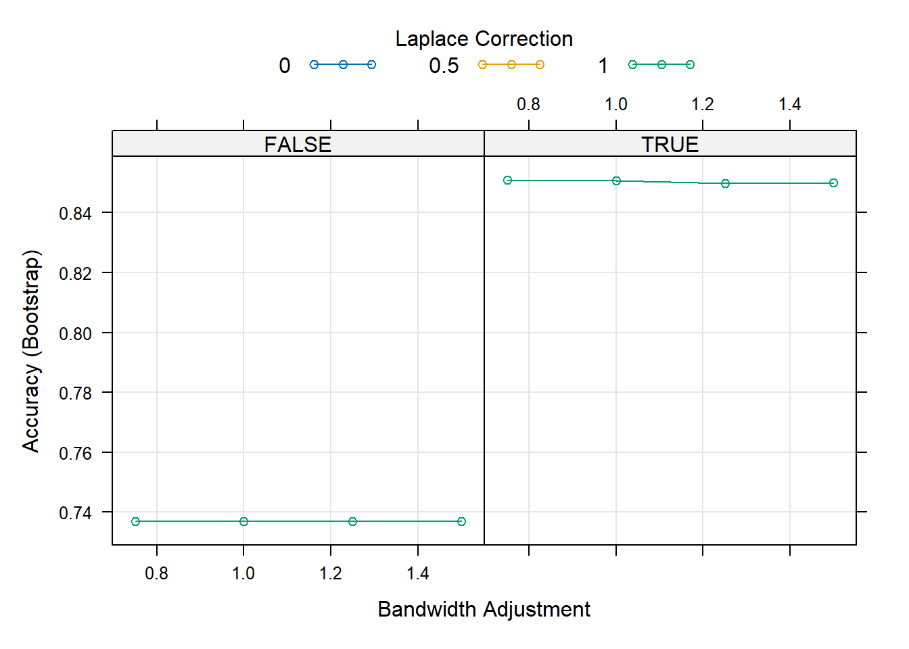
Code
from sklearn.model_selection import GridSearchCV, StratifiedKFold
from sklearn.naive_bayes import MultinomialNB, BernoulliNB, ComplementNB
# Métrica (elige la que te convenga)
scorer = "balanced_accuracy" # o 'balanced_accuracy', 'roc_auc', 'accuracy', etc.
pipe = Pipeline([
("clf", MultinomialNB()) # nombre del paso = 'clf'
])
# Espacio de búsqueda: probamos 3 NB distintos
param_grid = [
{ # MultinomialNB
"clf": [MultinomialNB()],
"clf__alpha": [1e-3, 1e-2, 1e-1, 1.0, 2.0],
"clf__fit_prior": [True, False],
},
{ # ComplementNB
"clf": [ComplementNB()],
"clf__alpha": [1e-3, 1e-2, 1e-1, 1.0, 2.0],
"clf__fit_prior": [True, False],
"clf__norm": [True, False],
},
{ # BernoulliNB
"clf": [BernoulliNB()],
"clf__alpha": [1e-3, 1e-2, 1e-1, 1.0, 2.0],
},
]
cv = StratifiedKFold(n_splits=5, shuffle=True, random_state=42)
grid = GridSearchCV(
estimator=pipe,
param_grid=param_grid,
scoring="roc_auc",
cv=cv,
n_jobs=1, # importante en tu entorno
refit=True,
verbose=1
)
grid.fit(X_train_df, y_trainPy)GridSearchCV(cv=StratifiedKFold(n_splits=5, random_state=42, shuffle=True),
estimator=Pipeline(steps=[('clf', MultinomialNB())]), n_jobs=1,
param_grid=[{'clf': [MultinomialNB()],
'clf__alpha': [0.001, 0.01, 0.1, 1.0, 2.0],
'clf__fit_prior': [True, False]},
{'clf': [ComplementNB()],
'clf__alpha': [0.001, 0.01, 0.1, 1.0, 2.0],
'clf__fit_prior': [True, False],
'clf__norm': [True, False]},
{'clf': [BernoulliNB()],
'clf__alpha': [0.001, 0.01, 0.1, 1.0, 2.0]}],
scoring='roc_auc', verbose=1)In a Jupyter environment, please rerun this cell to show the HTML representation or trust the notebook. On GitHub, the HTML representation is unable to render, please try loading this page with nbviewer.org.
Parameters
| estimator | Pipeline(step...inomialNB())]) | |
| param_grid | [{'clf': [MultinomialNB()], 'clf__alpha': [0.001, 0.01, ...], 'clf__fit_prior': [True, False]}, {'clf': [ComplementNB()], 'clf__alpha': [0.001, 0.01, ...], 'clf__fit_prior': [True, False], 'clf__norm': [True, False]}, ...] | |
| scoring | 'roc_auc' | |
| n_jobs | 1 | |
| refit | True | |
| cv | StratifiedKFo... shuffle=True) | |
| verbose | 1 | |
| pre_dispatch | '2*n_jobs' | |
| error_score | nan | |
| return_train_score | False |
Parameters
| alpha | 2.0 | |
| force_alpha | True | |
| fit_prior | True | |
| class_prior | None | |
| norm | True |
Code
print("Best:", grid.best_estimator_)Best: Pipeline(steps=[('clf', ComplementNB(alpha=2.0, norm=True))])Code
print("Params:", grid.best_params_)Params: {'clf': ComplementNB(), 'clf__alpha': 2.0, 'clf__fit_prior': True, 'clf__norm': True}Code
print("CV score:", grid.best_score_)CV score: 0.72113431060774953.4 Predicción de la variable respuesta
Code
head(predict(nb_base, X_test, type = "class"))[1] Yes No No No Yes No
Levels: No YesCode
head(predict(nb_base, X_test, type = "raw")) No Yes
[1,] 2.226092e-01 0.77739080
[2,] 5.937698e-01 0.40623023
[3,] 6.046064e-01 0.39539356
[4,] 9.384762e-01 0.06152378
[5,] 3.985234e-05 0.99996015
[6,] 8.472974e-01 0.15270257Code
head(predict(naive_bayes_via_caret2, X_testC))
head(predict(naive_bayes_via_caret2, X_testC, type = "prob"))Code
from sklearn.metrics import confusion_matrix, balanced_accuracy_score
# Make predictions
train_predict = naive_bayes_fit.predict(X_train_df)
test_predict = naive_bayes_fit.predict(X_test_df)
def get_scores(y_real, predict):
ba_train = balanced_accuracy_score(y_real, predict)
cm_train = confusion_matrix(y_real, predict)
return ba_train, cm_train
def print_scores(scores):
return f"Balanced Accuracy: {scores[0]}\nConfussion Matrix:\n {scores[1]}"
train_scores = get_scores(y_trainPy, train_predict)
test_scores = get_scores(y_testPy, test_predict)
print("## Train Scores")## Train ScoresCode
print(print_scores(train_scores))Balanced Accuracy: 0.6493724679513846
Confussion Matrix:
[[966 347]
[104 134]]Code
print("\n\n## Test Scores")
## Test ScoresCode
print(print_scores(test_scores))Balanced Accuracy: 0.6157894736842106
Confussion Matrix:
[[432 138]
[ 50 45]]3.5 Validación de la performance del modelo
Code
nb_trn_pred = predict(nb_base, X_train)
nb_tst_pred = predict(nb_base, X_test)Code
calc_class_err(predicted = nb_trn_pred, actual = y_train)[1] 1Code
calc_class_err(predicted = nb_tst_pred, actual = y_test)[1] 1Code
table(predicted = nb_tst_pred, actual = y_test) actual
predicted 30 31 32 33 34 35 36 37 38 39 40 41 42 43 44 45 46 47 48 49 50 51 52
No 0 0 0 3 1 4 4 4 3 9 6 4 6 6 11 3 13 18 11 21 15 15 15
Yes 1 1 2 2 3 4 3 1 4 2 2 3 6 5 3 5 1 5 5 9 12 7 6
actual
predicted 53 54 55 56 57 58 59 60 61 62 63 64 65 66 67 68 69 70 71 72 73 74 75
No 18 20 18 15 9 8 8 12 6 6 13 7 8 7 5 8 10 10 7 6 7 8 2
Yes 11 9 5 6 7 3 8 8 10 5 9 3 4 7 4 5 11 7 11 3 8 5 3
actual
predicted 76 77 78 79 80 81 82 84 125
No 3 1 1 3 0 0 0 0 0
Yes 6 2 3 1 3 3 3 1 1Code
library(e1071)
library(ggplot2)
y_train <- factor(y_train)
y_test <- factor(y_test, levels = levels(y_train))
# 1) Pasar predictores a numérico con dummies (model.matrix)
# Si X_* ya NO incluyen la respuesta, usa ~ . - 1
mm_train <- model.matrix(~ . - 1, data = X_train) # matriz numérica
mm_test <- model.matrix(~ . - 1, data = X_test)
# 2) PCA en TRAIN (centrado y escalado), proyectar TEST
pca <- prcomp(mm_train, center = TRUE, scale. = TRUE)
Z_train <- predict(pca, newdata = mm_train)[, 1:2]
Z_test <- predict(pca, newdata = mm_test)[, 1:2]
colnames(Z_train) <- c("PC1","PC2")
colnames(Z_test) <- c("PC1","PC2")
# 3) Naive Bayes (e1071) en el plano PCA
nb <- naiveBayes(x = as.data.frame(Z_train), y = y_train, laplace = 0)
# 4) Grid y predicción para pintar la frontera
h <- 0.02
x_min <- min(Z_train[,1]) - 1; x_max <- max(Z_train[,1]) + 1
y_min <- min(Z_train[,2]) - 1; y_max <- max(Z_train[,2]) + 1
grid <- expand.grid(PC1 = seq(x_min, x_max, by = h),
PC2 = seq(y_min, y_max, by = h))
grid$pred <- predict(nb, newdata = grid)
# 5) Plot fondo + puntos
pal_fill <- c("No" = "#FFAAAA", "Yes" = "#b3ffff")
pal_pts <- c("No" = "#FF0000", "Yes" = "#00ffff")
df_train <- data.frame(Z_train, clase = y_train, split = "Train")
df_test <- data.frame(Z_test, clase = y_test, split = "Test")
ggplot() +
geom_raster(data = grid, aes(PC1, PC2, fill = pred)) +
scale_fill_manual(values = pal_fill, name = "Fondo") +
geom_point(data = df_train, aes(PC1, PC2, color = clase), size = 1.8) +
geom_point(data = df_test, aes(PC1, PC2, color = clase), size = 2.2, shape = 21) +
scale_color_manual(values = pal_pts, name = "Puntos") +
coord_equal(expand = FALSE, xlim = c(x_min, x_max), ylim = c(y_min, y_max)) +
labs(title = "Frontera Naive Bayes (e1071) en plano PCA", x = "PC1", y = "PC2") +
theme_minimal()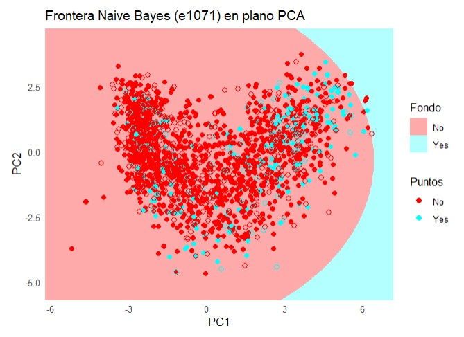
Code
confusionMatrix(naive_bayes_via_caret2)Bootstrapped (25 reps) Confusion Matrix
(entries are percentual average cell counts across resamples)
Reference
Prediction No Yes
No 84.1 14.1
Yes 0.9 1.0
Accuracy (average) : 0.8509Code
ggplot(melt(naive_bayes_via_caret2$resample[,-4]), aes(x = variable, y = value, fill=variable)) +
geom_boxplot(show.legend=FALSE) +
xlab(NULL) + ylab(NULL)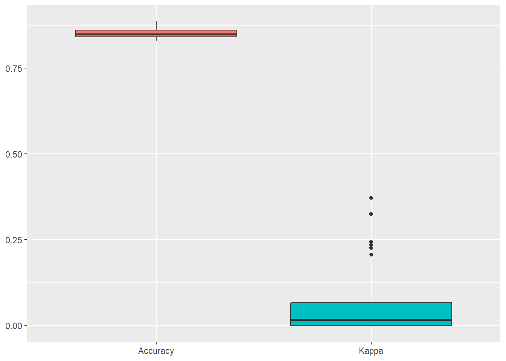
Code
library(caret)
library(ggplot2)
set.seed(123)
# y como factor
y_trainC <- factor(y_trainC)
y_testC <- factor(y_testC, levels = levels(y_train))
# 1) Preprocesado: centrar, escalar, PCA=2 (ajustado en train)
preproc <- preProcess(X_trainC, method = c("center", "scale", "pca"), pcaComp = 2)
Z_train <- predict(preproc, X_trainC) # PC1, PC2
Z_test <- predict(preproc, X_testC)
# 2) Entrenar Naive Bayes (klaR) en el espacio PCA (dos predictores)
ctrl <- trainControl(method = "cv", number = 5, classProbs = TRUE,
summaryFunction = twoClassSummary)
modelo_nb <- train(
x = Z_train[, c("PC1", "PC2")], y = y_trainC,
method = "nb", # klaR::NaiveBayes vía caret
trControl = ctrl,
metric = "ROC", # mejor que Accuracy si hay desbalance
tuneGrid = expand.grid(
usekernel = c(TRUE, FALSE),
fL = c(0, 1), # laplace
adjust = c(1, 2)
)
)
# 3) Grid en el plano PCA (rango del TRAIN)
h <- 0.02
x_min <- min(Z_train$PC1) - 1; x_max <- max(Z_train$PC1) + 1
y_min <- min(Z_train$PC2) - 1; y_max <- max(Z_train$PC2) + 1
grid <- expand.grid(
PC1 = seq(x_min, x_max, by = h),
PC2 = seq(y_min, y_max, by = h)
)
# 4) Predicción del modelo en el grid
grid$pred <- predict(modelo_nb, newdata = grid)
# 5) Plot fondo + puntos
pal_fill <- c("No" = "#FFAAAA", "Yes" = "#b3ffff")
pal_pts <- c("No" = "#FF0000", "Yes" = "#00ffff")
df_train <- data.frame(Z_train, clase = y_trainC, split = "Train")
df_test <- data.frame(Z_test, clase = y_testC, split = "Test")
ggplot() +
geom_raster(data = grid, aes(PC1, PC2, fill = pred), alpha = 1) +
scale_fill_manual(values = pal_fill, name = "Fondo") +
geom_point(data = df_train, aes(PC1, PC2, color = clase), size = 1.8) +
geom_point(data = df_test, aes(PC1, PC2, color = clase), size = 2.2, shape = 21) +
scale_color_manual(values = pal_pts, name = "Puntos") +
coord_equal(expand = FALSE, xlim = c(x_min, x_max), ylim = c(y_min, y_max)) +
labs(title = "Frontera Naive Bayes (caret::nb) en plano PCA",
x = "PC1", y = "PC2") +
theme_minimal() +
theme(legend.position = "right")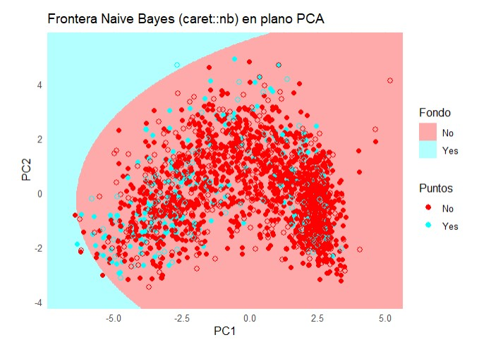
Code
from sklearn.metrics import classification_report
print(classification_report(y_testPy, test_predict)) precision recall f1-score support
No 0.90 0.76 0.82 570
Yes 0.25 0.47 0.32 95
accuracy 0.72 665
macro avg 0.57 0.62 0.57 665
weighted avg 0.80 0.72 0.75 665Code
import numpy as np
import matplotlib.pyplot as plt
from matplotlib.colors import ListedColormap
import matplotlib.patches as mpatches
from sklearn.preprocessing import StandardScaler, LabelEncoder
from sklearn.decomposition import PCA
from sklearn.naive_bayes import GaussianNB # << cambio clave
# ==== Parámetros ====
h = 0.02
# ==== 0) Tipos correctos ====
X_trainPy = np.asarray(X_trainPy, dtype=float)
X_testPy = np.asarray(X_testPy, dtype=float)
y_trainPy = np.asarray(y_trainPy)
y_testPy = np.asarray(y_testPy)
# Codificar etiquetas (para colorear y leyendas)
le = LabelEncoder()
y_train_num = le.fit_transform(y_trainPy)
y_test_num = le.transform(y_testPy)
# ==== 1) Estandarizar (fit en train) + PCA (fit en train) ====
scaler = StandardScaler()
X_train_scaled = scaler.fit_transform(X_trainPy)
X_test_scaled = scaler.transform(X_testPy)
pca = PCA(n_components=2, random_state=0)
Z_train = pca.fit_transform(X_train_scaled).astype(float)
Z_test = pca.transform(X_test_scaled).astype(float)
# ==== 2) Entrenar Naive Bayes (Gaussian) en el espacio PCA ====
clf = GaussianNB()
clf.fit(Z_train, y_train_num)GaussianNB()In a Jupyter environment, please rerun this cell to show the HTML representation or trust the notebook.
On GitHub, the HTML representation is unable to render, please try loading this page with nbviewer.org.
Parameters
| priors | None | |
| var_smoothing | 1e-09 |
Code
# ==== 3) Mallado y predicción para el fondo ====
x_min, x_max = Z_train[:, 0].min() - 1, Z_train[:, 0].max() + 1
y_min, y_max = Z_train[:, 1].min() - 1, Z_train[:, 1].max() + 1
xx, yy = np.meshgrid(np.arange(x_min, x_max, h),
np.arange(y_min, y_max, h))
Z_grid_pred_num = clf.predict(np.c_[xx.ravel(), yy.ravel()]).reshape(xx.shape)
# ==== 4) Paletas ====
cmap_light = ListedColormap(['#FFAAAA', '#b3ffff'])
cmap_bold = ListedColormap(['#FF0000', '#00ffff'])
# ==== 5) Plot ====
plt.figure(figsize=(7,5))
plt.pcolormesh(xx, yy, Z_grid_pred_num, cmap=cmap_light, shading='auto')
plt.scatter(Z_train[:, 0], Z_train[:, 1], c=y_train_num, cmap=cmap_bold,
edgecolor='k', s=25, alpha=0.85, label='Train')
plt.scatter(Z_test[:, 0], Z_test[:, 1], c=y_test_num, cmap=cmap_bold,
edgecolor='k', s=35, marker='o', label='Test')
plt.xlim(xx.min(), xx.max()); plt.ylim(yy.min(), yy.max())(-6.3391686872764605, 7.340831312723248)
(-4.7438491611385425, 5.696150838861235)Code
plt.xlabel('PC1'); plt.ylabel('PC2')
plt.title("Frontera Naive Bayes (Gaussian) en plano PCA")
# Leyenda de clases (nombres originales)
classes = list(le.classes_)
palette = ['#FF0000', '#00ffff']
patches = [mpatches.Patch(color=palette[i % len(palette)], label=str(lbl))
for i, lbl in enumerate(classes)]
legend_classes = plt.legend(handles=patches, title="Clases",
loc='upper right', bbox_to_anchor=(1.32, 1.0))
plt.gca().add_artist(legend_classes)
plt.legend(loc='best') # Train/Test
plt.tight_layout()
plt.show()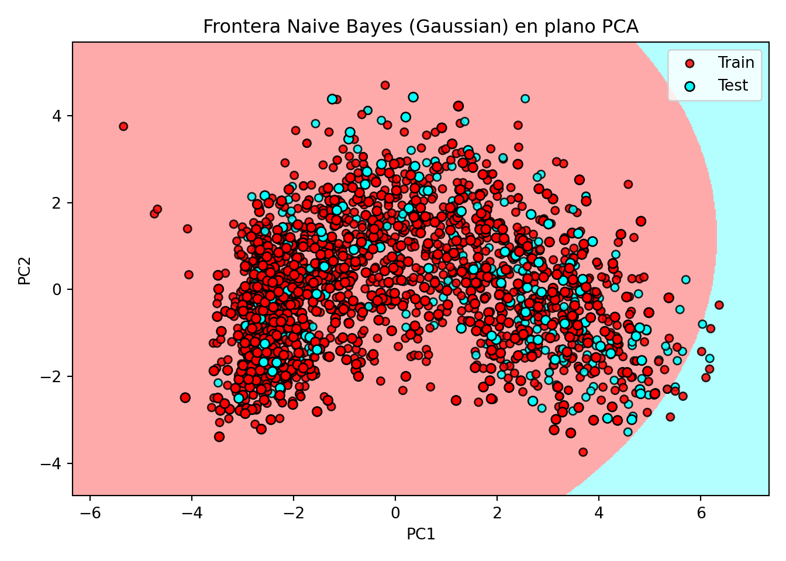
4 Bibliografia
- https://daviddalpiaz.github.io/r
Esta web está creada por Dante Conti y Sergi Ramírez, (c) 2025